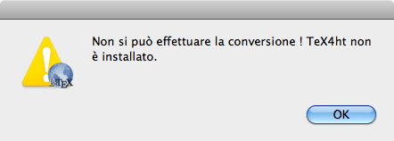

Se TeX4ht non è stato installato SimpleTeX4ht visualizzerà il seguente messaggio di errore:

SimpleTeX4ht non comprende TeX4ht. L’installazione di TeX4ht risolve il problema.
Si è verificato un errore durante la compilazione. TeX4ht non è in grado di convertire il vostro file LaTeX.